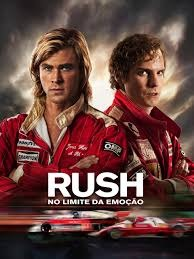
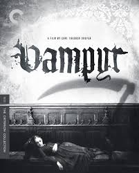
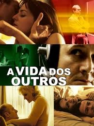
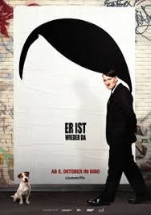

Conspiração2001 ‧ Guerra/Drama ‧ 1h 36m |
Rush2013 ‧ Esporte/Ação ‧ 2h 3m |
O amigo Alemão2012 ‧ Romance/guerra ‧ 1h 40m |
Vampiro1932 ‧ Terror/Fantasia ‧ 1h 15m |
 A queda: As últimas horas de Hitler2004 ‧ Guerra/Documentário ‧ 2h 36m |
A vida dos outros2006 ‧ Thriller/Guerra ‧ 2h 17m |
O experimento2014 ‧ Ficção científica/Terror ‧ 1h 30m |
Nada de novo no front2022 ‧ Guerra/Ação ‧ 2h 27m |
A onda2008 ‧ Thriller/Drama ‧ 1h 47m |
Ele está de volta2015 ‧ Comédia/Drama ‧ 1h 56m |